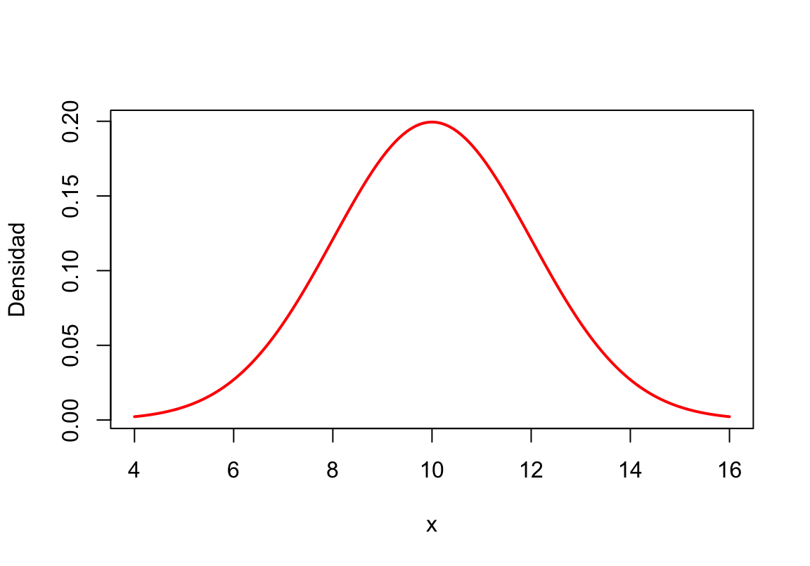

![]()
Resultado: F -> x = 0Quarto Markdown
Texto, ecuaciones y código en un único documento
30/10/2026
Los cuatro ejes de un documento en Quarto
En este curso utilizaremos Quarto para producir reportes técnico-científicos totalmente reproducibles que integran narrativa matemática y computación estadística:
- YAML y Configuración Global: Define el formato de salida (
pdf,html,revealjs), el idioma, el motor de LaTeX y opciones generales. - Markdown Estructurado: Formato de texto enriquecido, listas anidadas, secciones jerárquicas y bloques de ejercicios (
#exm-). - LaTeX Matemático: Fórmulas en línea, ecuaciones numeradas y referenciadas (
#eq-), entornos alineados (aligned) y funciones a trozos (cases). - Chunks de Código (R y Python): Inserción de código ejecutable, control de salidas (
#|), anotaciones (#<1>), código en línea y figuras referenciadas (#fig-).
1. El Encabezado YAML y Configuraciones Globales
Estructura del YAML para documentos PDF
El bloque YAML se ubica siempre al inicio del archivo .qmd delimitado por tres guiones (---). Controla el aspecto y comportamiento global del documento:
---
title: "Variables discretas y gráficos con R"
author: "Mario Morales"
format:
pdf:
pdf-engine: xelatex
lang: es
code-line-numbers: true
highlight-style: arrow
number-sections: true
number-depth: 3
---pdf-engine: xelatex: Motor moderno que soporta tildes y fuentes del sistema sin inconvenientes.lang: es: Traduce automáticamente palabras clave como Figura, Tabla, Índice o Ejercicio.code-line-numbers: true: Numera todas las líneas de código del documento.number-sections: true: Numera automáticamente las secciones (1,1.1,1.1.1).
2. Markdown: Texto, Listas y Bloques
Formato de texto y jerarquía de secciones
Sintaxis en .qmd
# Nivel 1: Modelos discretos
## Nivel 2: Experimento de Bernoulli {#sec-Bernoulli}
### Nivel 3: Ciclo `for`
Es un experimento con dos resultados:
*éxito* (o _éxito_) y **fracaso** (o __fracaso__).
1. Si resulta éxito toma el valor de *uno*.
a. Sub-ítem 1
b. Sub-ítem 2
2. Si resulta fracaso toma el valor de **cero**.
Como estudiamos en la sección -@sec-Bernoulli...Resultado compilado
1. Modelos discretos
1.1 Experimento de Bernoulli
1.1.1 Ciclo for
Es un experimento con dos resultados: éxito y fracaso.
- Si resulta éxito toma el valor de uno.
- Sub-ítem 1
- Sub-ítem 2
- Si resulta fracaso toma el valor de cero.
Como estudiamos en la sección 1.1…
Bloques de Ejercicios y Llamadas (Callouts)
Podemos crear entornos numerados para ejercicios, teoremas o ejemplos utilizando tres puntos (:::) y el prefijo #exm-:
Sintaxis en .qmd
:::{#exm-DistribucionNormal}
Si $X$ es una variable aleatoria con distribución normal de media $\mu=10$ y desviación estándar $\sigma=2$:
a. Graficar su función de densidad.
b. Calcular $P(8.5\leq X \leq 11.5)$.
:::Resultado compilado
Ejemplo 1 Si \(X\) es una variable aleatoria con distribución normal de media \(\mu=10\) y desviación estándar \(\sigma=2\):
- Graficar su función de densidad.
- Calcular \(P(8.5\leq X \leq 11.5)\).
callouts
Nota
Una forma visualmente elegante de escribir una nota.
3. LaTeX: Ecuaciones, Alineación y Casos
Fórmulas en línea y Ecuaciones Numeradas
- En línea: Se encierra entre signos de pesos simples:
$\pi$produce \(\pi\), y$0 \leq \pi \leq 1$produce \(0 \leq \pi \leq 1\). - En bloque numerado: Se usa doble signo de pesos
$$acompañado de una etiqueta{#eq-nombre}pegada al cierre:
$$
P(X=x)=f_X(x)=\binom{n}{x}\pi^x(1-\pi)^{n-x} \text{ para } x=0,1,\ldots ,n
$${#eq-funcionProbBin}
En R, la función `dbinom` evalúa la expresión dada en -@eq-funcionProbBin (o @eq-funcionProbBin).Resultado:
\[P(X=x)=f_X(x)=\binom{n}{x}\pi^x(1-\pi)^{n-x} \text{ para } x=0,1,\ldots ,n \qquad(1)\]
En R, la función dbinom evalúa la expresión dada en 1 (o Ecuación 1).
Ecuaciones Centradas y Alineadas (aligned)
Cuando necesitamos desarrollar una demostración o deducción paso a paso alineando los signos de igualdad (&=), utilizamos el entorno \begin{aligned} ... \end{aligned}:
$$
\begin{aligned}
\sigma^2_X &= E\left[(X - E(X))^2\right] \\
&= \sum_{x \in R} (x - \mu_X)^2 f_X(x) \\
&= \sum_{x=0}^n (x - n\pi)^2 \binom{n}{x}\pi^x(1-\pi)^{n-x} \\
&= n\pi(1-\pi)
\end{aligned}
$${#eq-varianzaBin}Resultado: \[ \begin{aligned} \sigma^2_X &= E\left[(X - E(X))^2\right] \\ &= \sum_{x \in R} (x - \mu_X)^2 f_X(x) \\ &= \sum_{x=0}^n (x - n\pi)^2 \binom{n}{x}\pi^x(1-\pi)^{n-x} \\ &= n\pi(1-\pi) \end{aligned} \qquad(2)\]
Funciones Definidas a Trozos (cases)
Para definir funciones de probabilidad discretas, densidades continuas o variables indicadoras por ramas, empleamos el entorno \begin{cases} ... \end{cases}:
$$
f_X(x) = \begin{cases}
\pi & \text{si } x = 1 \text{ (Éxito)} \\
1 - \pi & \text{si } x = 0 \text{ (Fracaso)} \\
0 & \text{en cualquier otro caso}
\end{cases}
$${#eq-bernoulliCasos}Resultado: \[ f_X(x) = \begin{cases} \pi & \text{si } x = 1 \text{ (Éxito)} \\ 1 - \pi & \text{si } x = 0 \text{ (Fracaso)} \\ 0 & \text{en cualquier otro caso} \end{cases} \qquad(3)\]
4. Inserción de Código (R y Python) y Opciones de Chunks
Bloques de código ejecutable en R y Python
Un bloque (chunk) se abre con ```{r} o ```{python} y las opciones internas se especifican en las primeras líneas usando el comentario especial #|:
Principales opciones de configuración #|
| Opción | Valores | Función en el documento compilado |
|---|---|---|
#| echo: |
true / false |
Muestra u oculta el código fuente en el reporte final. |
#| eval: |
true / false |
Ejecuta o no el código (útil para mostrar sintaxis sin correrla). |
#| include: |
true / false |
Si es false, ejecuta el código en silencio pero no muestra ni código ni salida. |
#| warning: |
true / false |
Oculta los mensajes de advertencia (warnings) de librerías como ggplot2. |
#| error: |
true / false |
Permite controlar si se muestran errores de ejecución en el documento. |
#| code-line-numbers: |
true / "6" |
Numera las líneas del bloque o resalta líneas específicas (ej. línea "6"). |
Anotaciones en el código y Código en Línea
Podemos explicar líneas específicas usando marcadores # <1>, # <2> e insertar resultados directamente dentro de un párrafo con :
Código
- 1
- Se fija la probabilidad de éxito \(\pi = 0.4\).
- 2
- Se fija el número de repeticiones \(n = 10\).
- 3
-
Inicia el bucle
for. - 4
- Se simula el experimento de Bernoulli.
- 5
- Se asigna el valor a la variable aleatoria e incrementa el contador.
Código en línea
Código en línea: Escribir
En esta simulación se obtuvieron `r cont1` unos y `r cont0` cerosproduce automáticamente:“En esta simulación se obtuvieron 7 unos y 3 ceros.”
5. Figuras
Figuras, Dimensiones y Referencias Cruzadas
Para que un gráfico sea numerado y referenciable, su etiqueta #| label: debe iniciar con el prefijo fig- y contar con #| fig-cap::
```{r}
#| echo: true
#| label: fig-DensidadNormal
#| fig-cap: "Gráfica de la densidad normal con $\\mu=10$ y $\\sigma=2$"
#| fig-width: 6
#| fig-height: 4.2
mu = 10
s = 2
x = pretty(c(mu - 3*s, mu + 3*s), 500)
y = dnorm(x, mean = mu, sd = s)
plot(x, y, type = "l", col = "red",
lwd = 2, ylab = "Densidad")
```
Como se aprecia en la figura -@fig-DensidadNormal...
Como se aprecia en la figura 1…
Inserción de Imágenes desde Archivos Externos
Para insertar diagramas, fotografías o logotipos guardados en nuestra carpeta (formatos .png, .jpg, .pdf, .svg), usamos la sintaxis {atributos}:
Sintaxis en .qmd
{#fig-escudo width="35%" fig-align="center"}
En la figura -@fig-escudo (o @fig-escudo) se observa el escudo oficial...Atributos principales entre {}:
#fig-nombre: Asigna la etiqueta para numerar y referenciar con@fig-nombre.width="35%"(owidth="4cm"): Controla el ancho de la imagen.fig-align="center": Alinea la imagen (left,center,right).
6. Tablas en Quarto
Tablas insertadas manualmente
Se construyen usando barras verticales (|) para separar columnas y guiones (-) para el encabezado. La posición de los dos puntos (:) define la alineación:
Sintaxis en .qmd
| Distribución | Función en R | Media $E(X)$ |
| :--- | :---: | ---: |
| Bernoulli | `rbinom(n, 1, p)` | $\pi$ |
| Binomial | `dbinom(x, n, p)` | $n\pi$ |
| Normal | `dnorm(x, mu, s)` | $\mu$ |
: Modelos de probabilidad en R. {#tbl-modelos}
En la @tbl-modelos (o tabla -@tbl-modelos) se resumen...:---(Izquierda),:---:(Centro),---:(Derecha).: Título {#tbl-etiqueta}: Numera la tabla y permite citarla con@tbl-etiqueta.
Resultado compilado
| Distribución | Función en R | Media \(E(X)\) |
|---|---|---|
| Bernoulli | rbinom(n, 1, p) |
\(\pi\) |
| Binomial | dbinom(x, n, p) |
\(n\pi\) |
| Normal | dnorm(x, mu, s) |
\(\mu\) |
Tablas desde R con knitr::kable()
Cuando los resultados provienen de un data.frame en R, usamos la función kable() del paquete knitr junto con las opciones de chunk #| label: tbl-... y #| tbl-cap::
Sintaxis en .qmd
```{r}
#| echo: true
#| label: tbl-binomial
#| tbl-cap: "Distribución Binomial ($n=5, \\pi=0.4$)"
library(knitr)
x = 0:5
fx = dbinom(x, size = 5, prob = 0.4)
Fx = pbinom(x, size = 5, prob = 0.4)
df = data.frame(x = x, fx = fx, Fx = Fx)
kable(df, digits = 4, align = "ccc",
col.names = c("$x$", "$f_X(x)$", "$F_X(x)$"))
```
Los cálculos se muestran en la tabla -@tbl-binomial. Resultados
| \(x\) | \(f_X(x)\) | \(F_X(x)\) |
|---|---|---|
| 0 | 0.0778 | 0.0778 |
| 1 | 0.2592 | 0.3370 |
| 2 | 0.3456 | 0.6826 |
| 3 | 0.2304 | 0.9130 |
| 4 | 0.0768 | 0.9898 |
| 5 | 0.0102 | 1.0000 |
Los cálculos se muestran en la tabla 2.
7. Tabla de Contenido e Índices
Tabla de Contenido (toc)
Para generar automáticamente el índice general de secciones y subsecciones del documento, agregamos la opción toc: true en el encabezado YAML:
---
title: "Variables discretas y gráficos con R"
author: "Mario Morales"
lang: es
format:
pdf:
pdf-engine: xelatex
toc: true
toc-depth: 3
toc-title: "Contenido"
number-sections: true
---toc: true: Activa la creación automática de la tabla de contenido al inicio del documento.toc-depth: 3: Define hasta qué nivel de encabezado incluir (1=#,2=##,3=###).toc-title: "Contenido": Permite personalizar el título del índice (por defecto conlang: esmuestra “Tabla de contenidos”).
Índice de Figuras (lof)
Si el documento contiene gráficos generados con R o imágenes externas etiquetadas con #fig- y su respectivo pie de figura (fig-cap), podemos incluir el listado automático de figuras con lof: true (List of Figures):
---
title: "Variables discretas y gráficos con R"
author: "Mario Morales"
lang: es
format:
pdf:
pdf-engine: xelatex
toc: true
lof: true
number-sections: true
---lof: true: Inserta el Índice de figuras con la numeración y página exacta de cada gráfico.- Requisito: Solo se listan en el índice aquellas figuras que tengan tanto etiqueta (
#fig-...o#| label: fig-...) como título (#| fig-cap: "..."). - Con
lang: es, el título se traduce automáticamente como “Listado de figuras” (en PDF/LaTeX).
Índice de Tablas (lot)
De manera análoga, para generar automáticamente la lista de todas las tablas manuales o creadas con knitr::kable() que estén numeradas en el documento, activamos lot: true (List of Tables):
---
title: "Variables discretas y gráficos con R"
author: "Mario Morales"
lang: es
format:
pdf:
pdf-engine: xelatex
toc: true
lof: true
lot: true
number-sections: true
---lot: true: Inserta el Índice de tablas justo después de la tabla de contenido (o del índice de figuras).- Requisito: La tabla debe contar con su etiqueta
#tbl-...y su leyenda (: Título {#tbl-...}en tablas manuales o#| tbl-cap: "..."en bloques de código). - En documentos PDF compilados en español (
lang: es), se titula automáticamente “Listado de tablas”.
8. Bibliografía y Citaciones con BibTeX
Configuración del archivo .bib en el YAML
Para gestionar referencias bibliográficas en Quarto, almacenamos las fuentes en un archivo de texto plano con extensión .bib (por ejemplo, Bibliografia.bib) en la misma carpeta del documento .qmd y lo enlazamos en el encabezado YAML:
1. En el encabezado YAML
2. Estructura de Bibliografia.bib
@book{Montgomery,
author = "Motgomery, Douglas C. and Runger, George C.",
publisher = "Mac Graw Hill",
title = "{Probabilidad y estadística aplicadas a la ingeniería}",
year = "2009"
}
@book{Canavos,
author = "Canavos, George C.",
publisher = "Mac Graw Hill",
title = "{Probabilidad y estadística}",
year = "1998"
}- Cada entrada tiene una llave única de citación después de
@book{(en este caso,MontgomeryyCanavos).
Formas de citar en el texto
En Quarto se cita utilizando el símbolo @ seguido de la llave registrada en el archivo Bibliografia.bib:
| Estilo de citación | Sintaxis en .qmd |
Resultado compilado |
|---|---|---|
| Entre paréntesis | [@Canavos] |
(Canavos 1998) |
| Con página o capítulo | [@Montgomery, p. 115] |
(Motgomery y Runger 2009, 115) |
| Citación múltiple | [@Canavos; @Montgomery] |
(Canavos 1998; Motgomery y Runger 2009) |
| En el texto (narrativa) | Según @Canavos, la función... |
Según Canavos (1998), la función… |
| Narrativa con página | @Montgomery [cap. 3] afirman... |
Motgomery y Runger (2009, cap. 3) afirman… |
| Solo el año | [-@Canavos] |
(1998) |
Ubicación de la Bibliografía en el Documento Final
Quarto genera e inserta automáticamente el listado de referencias citadas al final del documento. Podemos controlar su título y posición exacta de dos maneras:
1. Automática (Al final del documento)
Basta con agregar un encabezado de primer nivel al final del archivo .qmd:
Quarto colocará automáticamente debajo de este título todas las obras que hayan sido citadas con @ en el texto.
Lista de referencias generada en esta presentación
Canavos, George C. 1998. Probabilidad y estadística. Mac Graw Hill.
Motgomery, Douglas C., y George C. Runger. 2009. Probabilidad y estadística aplicadas a la ingeniería. Mac Graw Hill.